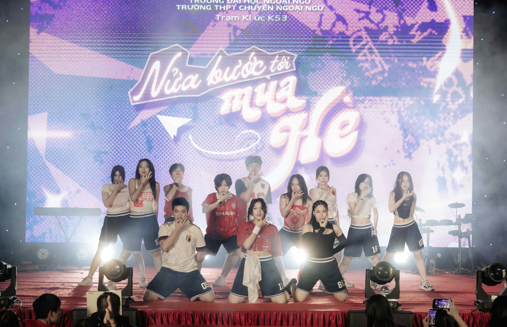
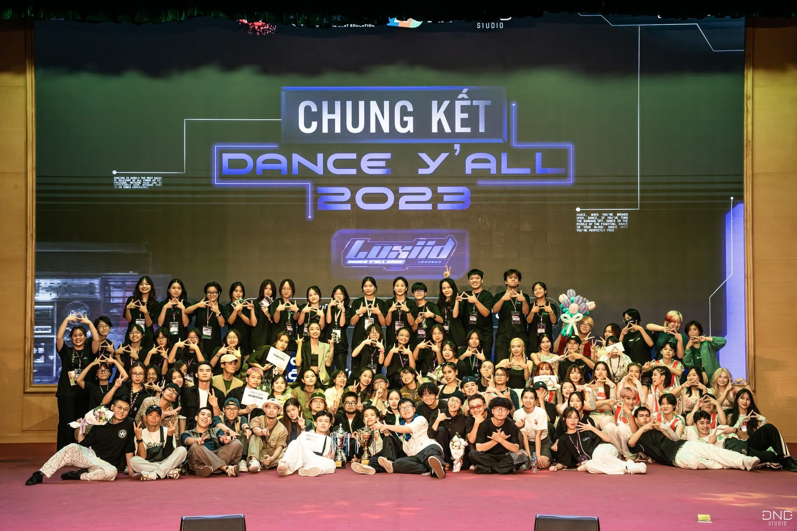

About Me
Hi, I am Phuong Thao Khuat, or you can call me Eddy. I am an international student from Vietnam, and this is my second semester at UTS. Currently, I am doing a double degree in Information Technology and Business. Moving to Sydney was a huge change for me, but also a rewarding one. And it has been a great experience studying at UTS so far. I really enjoy meeting new people from different cultures and it is such an opportunity to learn and emerge in a new environment.
In my free time, I usually listen to music and watch movies. I also really enjoy going out on sunny days and hanging out with my friends. My favorite sport is basketball. I used to play it a lot in Secondary, now I mostly just work out on my own but I still enjoy the rhythm and focus that sport brings. Dancing is also a part of my story. I was a member of my High school Dance club. We used to perform in many events, and we did organize a Dance Competition ourselves too. Being part of a team like that taught me a lot about collaboration and creativity. I learnt about planning, managing time, supporting teammates under pressure, and building the confidence to perform in front of a crowd.
 
Besides, in High school, I was once a class president so I took up a lot in organizing school and class events. This helped me to gain diverse experience as well as develop many important skills including:
Leadership skill
Being a class president or a leader, I knew how to inspire others. I learnt how to delegate tasks effectively as well as coordinate our class to conduct the plan. I also developed confidence in taking responsibility and representing my class to teachers.
Organizational skills
Planning large events required careful-setting timelines and allocating resources. Thus, I gained skills in dividing complex tasks into manageable steps and ensuring that everything ran smoothly.
Communication and interpersonal skills
To engage my classmates and our teachers, I had to communicate and listen actively in order to resolve conflicts. This really taught me how to adapt my communication style to different audiences.
Teamwork skills
Organizing events was never a solo effort. I collaborated closely with other executive members in our class, balanced differing opinions, and learnt to value each member’s contributions.
Financial management skills
Through dealing with class budgets and fundraising activities, I understand how to create a suitable financial plan and track spending for any project-based work.
And that is a part about me, let's move on!